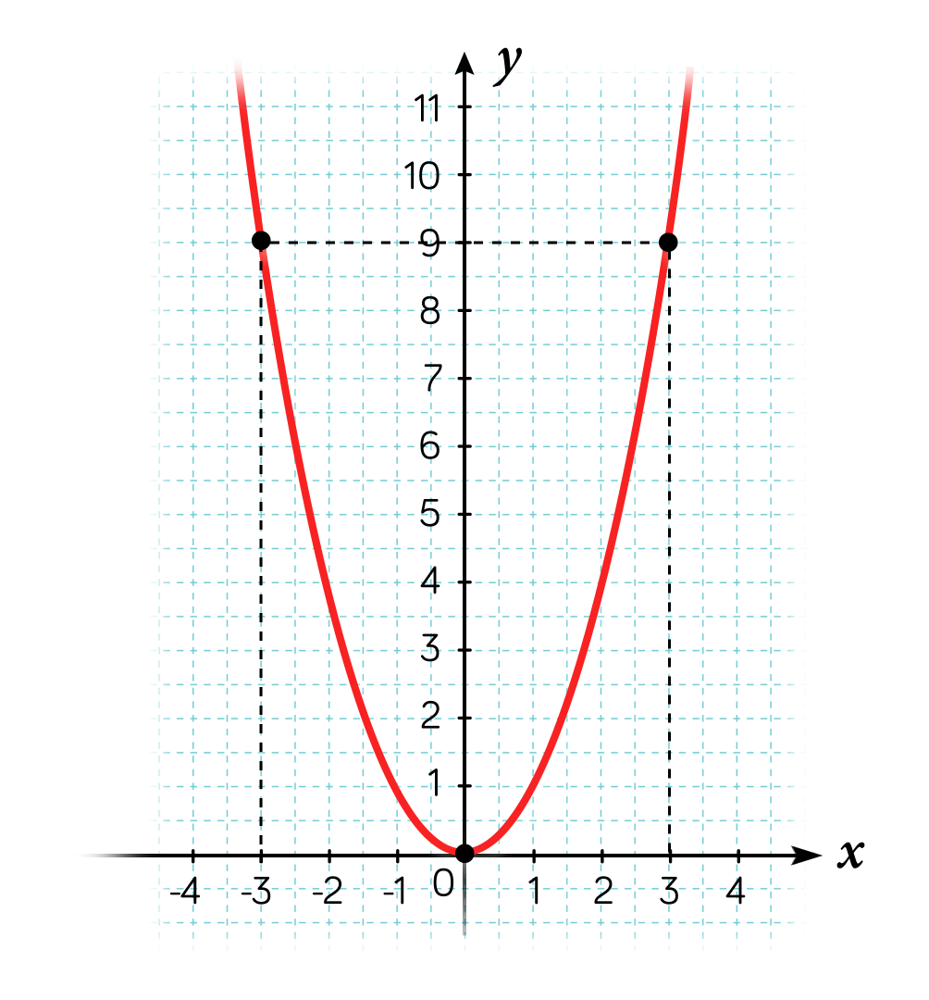
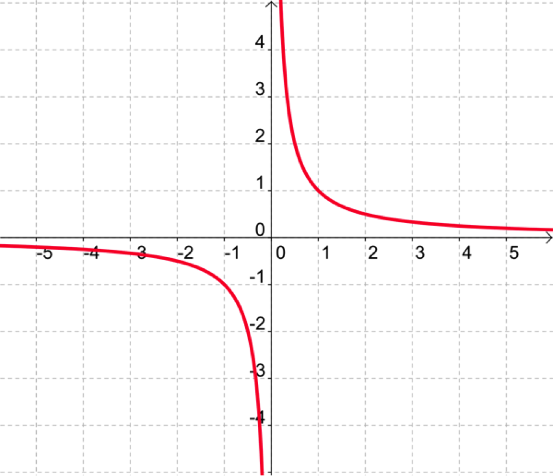
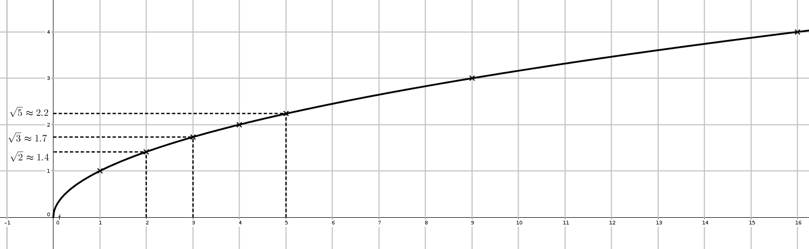
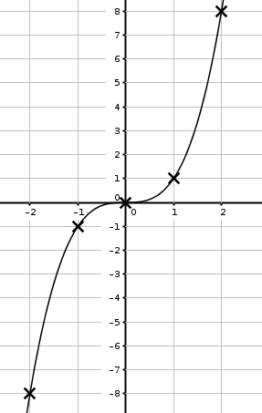

Fonctions de référence
1 Fonctions affines et fonctions linéaires
1.1 Définition
On appelle fonction affine une fonction f définie sur \mathbb{R} par f(x)=mx+p, où m et p sont deux nombres réels.
En particulier, lorsque p=0, la fonction f définie par f(x)=mx est une fonction linéaire.
La fonction g définie sur \mathbb{R} par g(x)=-2x+3 est affine.
La fonction h définie sur \mathbb{R} par h(x)=\dfrac{1}{3}x est linéaire.
1.2 Représentation graphique
Dans un repère, la représentation graphique d’une fonction affine est une droite non parallèle à l’axe des ordonnées.
Réciproquement, toute droite non parallèle à l’axe des ordonnées est la représentation graphique d’une fonction affine.
Pour tracer la représentation graphique d’une fonction affine, il suffit de connaître les coordonnées de deux points se trouvant sur la droite. On se donne deux valeurs de x, et on calcule les deux images.
On considère la fonction affine f définie par f(x)=3x-1. Tracer sa courbe représentative.
On commence par remplir un tableau de valeurs:
| x | 0 | 1 |
|---|---|---|
| f(x) | -1 | 2 |
On place les deux points de coordonnées (0;-1) et (1;2). La courbe représentative de f est la droite passant par ces deux points.
Soit f une fonction affine définie sur \mathbb{R} par f(x)=mx+p.
m est le coefficient directeur et p est l’ordonnée à l’origine (c’est l’ordonnée du point d’abscisse 0) de la droite représentative de f.
1.3 Variations des fonctions affines
Soit f une fonction affine définie sur \mathbb{R} par f(x)=mx+p.
Si m>0, alors f est croissante sur \mathbb{R}.
Si m=0, alors f est constante sur \mathbb{R}.
Si m<0, alors f est décroissante sur \mathbb{R}.
Soit f une fonction affine définie sur \mathbb{R} par f(x)=mx+p.
Soient x_1 et x_2 deux nombres réels quelconques tels que x_1<x_2.
f(x_2)-f(x_1)=(mx_2+p)-(mx_1+p)=mx_2+p-mx_1-p=m(x_2-x_1).
Comme par hypothèse x_2-x_1>0, le signe de f(x_2)-f(x_1) est le même que le signe de m.
On a donc les trois cas suivants:
Si m>0 alors f(x_2)-f(x_1)>0 ou encore f(x_1)<f(x_2). Donc f est croissante sur \mathbb{R}.
Si m<0 alors f(x_2)-f(x_1)<0 ou encore f(x_1)>f(x_2). Donc f est décroissante sur \mathbb{R}.
Si m=0 alors pour tout x de \mathbb{R}, f(x)=p. Donc f est constante sur \mathbb{R}.
1.4 Signe d’une fonction affine
Soit f une fonction affine définie sur \mathbb{R} par f(x)=mx+p, avec m\neq0.
f est du signe de m pour les valeurs supérieures à x_0=\dfrac{-p}{m}, et du signe contraire pour les valeurs inférieures.
Tableau de signes de f(x) en fonction de x:
2 La fonction carré
2.1 Généralités
La fonction carré est la fonction f définie sur \mathbb{R} par f(x)=x^2.
Variation de la fonction carré.
La fonction carré est décroissante sur ]-\infty;0] et croissante sur [0;+\infty[.
Montrons que la fonction carré f est décroissante sur ]-\infty;0]:
Soient a et b deux nombres réels quelconques négatifs tels que a \leqslant b.
Alors f(a)-f(b)=a^2-b^2=(a-b)(a+b)
Il est clair que a+b \leqslant 0.
De plus a \leqslant b \Leftrightarrow a-b \leqslant 0. Donc f(a)-f(b)=(a-b)(a+b) \geqslant 0.
Finalement f(a)-f(b)\geqslant 0 \Leftrightarrow f(a) \geqslant f(b) Donc f est bien décroissante sur ]-\infty;0]
Montrons que la fonction carré f est croissante sur [0;+\infty[:
Soient a et b deux nombres réels quelconques positifs tels que a \leqslant b.
Alors f(a)-f(b)=a^2-b^2=(a-b)(a+b)
Il est clair que a+b \geqslant 0.
De plus a \leqslant b \Leftrightarrow a-b \leqslant 0. Donc f(a)-f(b)=(a-b)(a+b) \leqslant 0.
Finalement f(a)-f(b)\leqslant 0 \Leftrightarrow f(a) \leqslant f(b) Donc f est bien croissante sur [0;+\infty[
2.2 Courbe représentative
La courbe de la fonction carré s’appelle une parabole.
Tableau de valeurs:
| x | -3 | -2 | -1 | 0 | 1 | 2 | 3 |
|---|---|---|---|---|---|---|---|
| f(x) | 9 | 4 | 1 | 0 | 1 | 4 | 9 |

Dans un repère (O,I,J), la courbe de la fonction carré est une parabole de sommet O, l’origine du repère.
Symétrie de la courbe
Dans un repère orthogonal (O,I,J), la courbe de la fonction carré est symétrique par rapport à l’axe des ordonnées.
Pour tout nombre réel a, montrons que les points de la courbe d’abscisses a et -a sont symétriques par rapport à l’axe des ordonnées.
f(-a)=(-a)^2=a^2=f(a). Les deux points de coordonnées (a;f(a)) et (-a;f(-a)) sont donc symétriques par rapport à l’axe des ordonnées.
2.3 Propriétés algébriques
Si a et b sont deux réels positifs tels que 0\leqslant a \leqslant b alors 0\leqslant a^2 \leqslant b^2
Si a et b sont deux réels négatifs tels que a \leqslant b \leqslant 0 alors a^2 \geqslant b^2 \geqslant 0
La fonction carré est paire.
3 La fonction inverse: x\mapsto \dfrac{1}{x}
3.1 Généralités
La fonction inverse est la fonction f définie sur \mathbb{R}^* par f(x)=\dfrac{1}{x}.
À tout réel non nul, elle associe son inverse.
La fonction inverse est décroissante sur ]-\infty;0[ et sur ]0;+\infty[.
Montrons que la fonction inverse est décroissante sur ]-\infty;0[.
Soit f la fonction inverse définie sur \mathbb{R}^* par f(x)=\dfrac{1}{x}.
Soient a et b deux réels négatifs non nuls tels que a<b<0.
Alors f(a)-f(b)=\dfrac{1}{a}-\dfrac{1}{b}=\dfrac{b-a}{ab}. Comme a<b, b-a>0. De plus ab>0. Donc \dfrac{b-a}{ab}>0 c’est-à-dire \dfrac{1}{a}-\dfrac{1}{b}>0 c’est-à-dire \dfrac{1}{a}>\dfrac{1}{b}. Finalement f(a)>f(b). Ainsi f est décroissante sur \mathbb{R}^{-*}
3.2 Courbe représentative
| x | -4 | -2 | -1 | -0{,}5 | -0{,}25 |
|---|---|---|---|---|---|
| \dfrac{1}{x} | \dfrac{1}{-4}=-0{,}25 | \dfrac{1}{-2}=-0{,}5 | -1 | \dfrac{1}{-0{,}5}=-2 | \dfrac{1}{-0{,}25}=-4 |
| x | 0 | 0,25 | 0,5 | 1 | 2 | 4 |
|---|---|---|---|---|---|---|
| \dfrac{1}{x} | \blacksquare | \dfrac{1}{0{,}25}=4 | \dfrac{1}{0{,}5}=2 | 1 | \dfrac{1}{2}=0{,}5 | \dfrac{1}{4}=0{,}25 |
La courbe de la fonction inverse s’appelle une hyperbole.

Dans un repère orthogonal (O,I,J), la courbe de la fonction inverse est symétrique par rapport à l’origine du repère.
3.3 Propriété algébrique
Si a et b sont deux réels non nuls tels que
0 < a \leqslant b alors \dfrac{1}{a} \geqslant\dfrac{1}{b} > 0
a \leqslant b <0 alors 0 >\dfrac{1}{a} \geqslant\dfrac{1}{b}
La fonction inverse est impaire.
Comparer sans calculatrice:
\dfrac{1}{8} et \dfrac{1}{6}
\dfrac{1}{5} et \dfrac{1}{20}
\dfrac{1}{9} et \dfrac{1}{9{,}1}
Que peut-on dire de \dfrac{1}{x} lorsque :
x\geqslant 3
x\leqslant-2
x < -5
x \geqslant\dfrac{2}{3}
4 La fonction racine carrée: x\mapsto \sqrt{x}
4.1 Généralités
Soit x un réel positif. (x\in \mathbb{R}^+)
La racine carrée de x est le nombre positif, noté \sqrt{x}, dont le carré est x.
Par conséquent, pour tout réel x\geqslant 0, \sqrt{x}\geqslant 0 et (\sqrt{x})^2=x.
La fonction racine carrée est la fonction définie sur l’intervalle [0;+\infty[, qui à tout nombre réel x positif ou nul associe sa racine carrée \sqrt{x}.
La fonction racine carrée est croissante sur l’intervalle [0;+\infty[.
Soient u et v deux réels positifs tels que 0<u\leqslant v.
\sqrt{u}-\sqrt{v}=\dfrac{(\sqrt{u}-\sqrt{v})(\sqrt{u}+\sqrt{v})}{\sqrt{u}+\sqrt{v}}=\dfrac{u-v}{\sqrt{u}+\sqrt{v}}. Or u-v\leqslant 0 et \sqrt{u}+\sqrt{v} >0. Donc \sqrt{u}-\sqrt{v}\leqslant 0. Donc la fonction racine est croissante sur [0;+\infty[.
Rappel: Soit f une fonction définie sur un intervalle I. On dit que f est croissante sur I si: Pour tout x et y, x\leqslant y, de I, f(x)\leqslant f(y)
4.2 Courbe représentative
Tableau de quelques valeurs de la fonction racine carrée.
| x | 0 | 0,25 | 1 | 2 | 3 | 4 | 5 | 9 |
|---|---|---|---|---|---|---|---|---|
| \sqrt{x} | 0 | 0,5 | 1 | \sqrt{2} | \sqrt{3} | 2 | \sqrt{5} | 3 |

5 La fonction cube: x\mapsto x^3
5.1 Généralités
La fonction cube est la fonction définie sur \mathbb{R} qui à tout réel x associe son cube x^3.
La fonction cube est croissante sur \mathbb{R}.
On commencera par montrer que la fonction cube est croissante sur l’intervalle ]-\infty;0], puis sur [0;+\infty[.
Sur ]-\infty;0]:
Vérifions que u^3-v^3=(u-v)(u^2+uv+v^2)
Soient u et v deux réels de ]-\infty;0] tels que u\leqslant v (1) La fonction carré est décroissante sur ]-\infty;0], donc u^2\geqslant v^2(2).
En multipliant chaque membre de (1) par v^2 qui est positif, on obtient \boxed{v^2.u\leqslant v^3}
En multipliant chaque membre de (2) par u qui est négatif, on obtient u^3\leqslant v^2.u c’est-à-dire \boxed{v^2.u\geqslant u^3}
Finalement, u^3 \leqslant v^2.u \leqslant v^3. Donc on a bien: \boxed{u^3\leqslant v^3}
Donc la fonction cube est bien croissante sur ]-\infty;0].
Sur [0;+\infty[
Soient u et v deux réels de [0;+\infty[ tels que u\leqslant v (1).
La fonction carré est croissante sur [0;+\infty[ donc u^2 \leqslant v^2 (3).
En multipliant chaque membre de (1) par u^2 qui est positif on obtient: \boxed{ u^3 \leqslant u^2.v}
En multipliant chaque membre de (3) par v qui est positif on obtient: \boxed{ u^2.v\leqslant v^3}
Finalement u^3 \leqslant u^2.v\leqslant v^3 c’est-à-dire u^3\leqslant v^3.
Donc la fonction cube est bien croissante sur [0;+\infty[
Ainsi, la fonction cube est bien croissante sur \mathbb{R}.
5.2 Courbe représentative
Tableau de quelques valeurs de la fonction cube.
| x | -2 | -1 | 0 | 1 | 2 |
|---|---|---|---|---|---|
| x^3 | -8 | -1 | 0 | 1 | 8 |
La fonction cube est impaire.
Courbe représentative de la fonction cube.
